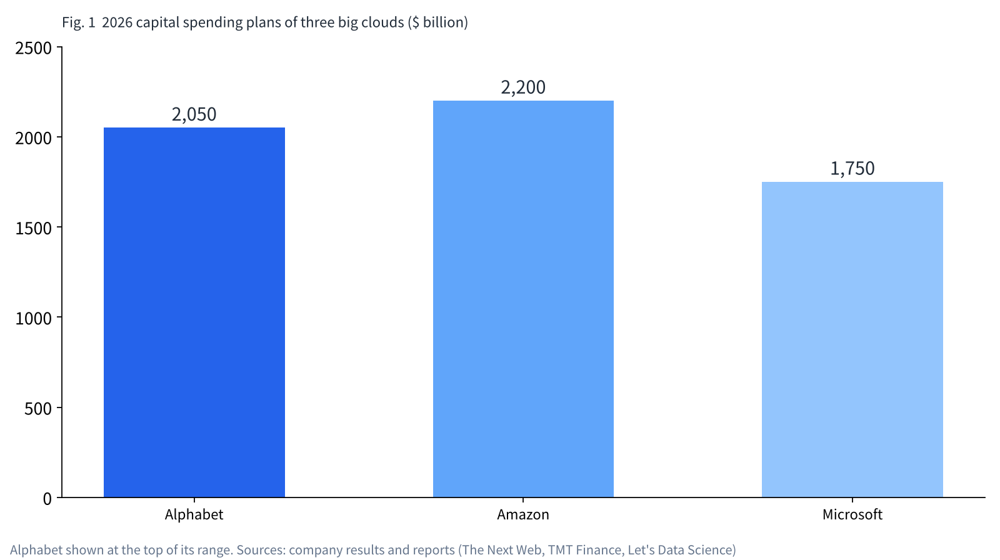
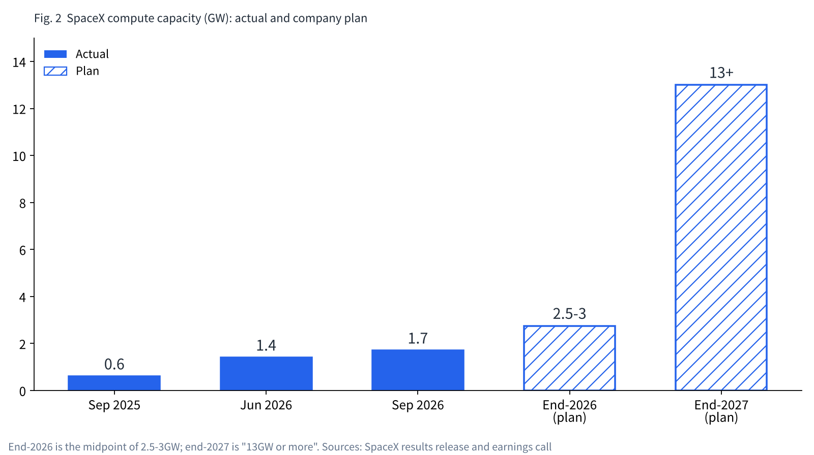

A space company becomes an AI cloud: renting computing power to its rivals
A rocket company has started earning by renting out AI computing power. Its tenants are also its rivals in AI.
Here in Tokyo, I line up the numbers from primary sources: the shortage of compute, the economics of renting GPUs, and the idea of computing in space.
I hold SpaceX shares. This is where I check how that company actually makes its money.

Why is computing power in short supply?
Training and running AI takes huge numbers of GPUs and a great deal of electricity. The big cloud companies are spending unprecedented sums to secure them. Alphabet raised its 2026 capital spending plan to as much as $205 billion. Amazon expects about $220 billion, and Microsoft about $175 billion.
It is still not enough. Amazon CEO Andy Jassy said the company cannot meet all of its 2026 demand, and that 2027 will look the same. Alphabet said it will get by on capacity rented from others until its own facilities come online.
Power is another wall. The International Energy Agency (IEA) expects data-center electricity demand to reach about 945TWh in 2030, roughly double today's level. For facilities optimized for AI alone, demand is set to more than quadruple.
Compute takes time to build, and many people want to use it. That is why a business of renting it out, by those who own it, can work.

The economics of renting out GPUs
Clouds whose core business is renting GPUs are called "neoclouds." CoreWeave, the leading example, posted revenue of $2.575 billion in April-June 2026, up 112% from a year earlier.
Adjusted EBITDA was $1.51 billion, a 59% margin. Yet the net result was a $626 million loss. Interest expense was $640 million and capital spending $6.422 billion; depreciation and interest eat into the profit.
CoreWeave's model rests on multi-year committed contracts. They are "take-or-pay," paid whether used or not, with a weighted average term of about five years. It borrows against those contracts to buy GPUs. In 2025, Microsoft alone accounted for about 67% of revenue.
In short, renting GPUs generates a lot of cash on the way in. Meanwhile, the weight of equipment bought with borrowed money presses down on the bottom line.
| Item | CoreWeave (Apr-Jun 2026) | SpaceX AI segment (Jul-Sep 2026) |
|---|---|---|
| Revenue | $2.575 billion | $7.560 billion |
| Adjusted EBITDA | $1.510 billion (59%) | $4.953 billion (about 66%) |
| Capital spending | $6.422 billion | $16.444 billion |
| Compute capacity | 1.5GW active, about 3.7GW contracted | 1.7GW (plan: 2.5-3GW by year-end) |
| Contract form | Committed contracts of about 5 years | Near-spot pricing, cancellable on 90 days' notice |
| Source of funds | Borrowing secured by contracts | Cash and securities of $89.855 billion |
How SpaceX rents differently
SpaceX's AI segment posted revenue of $7.56 billion in July-September. Adjusted EBITDA was $4.953 billion, a margin as high as CoreWeave's.
There are two large tenants. Anthropic pays $1.25 billion a month through May 2029. Google pays $920 million a month from October 2026 through June 2029. Together, compute revenue from the two runs at about $26 billion a year.
The difference from CoreWeave is the form of the contract. On its earnings call, SpaceX said the capacity is rented not on long fixed terms but at "near spot" prices. With each renewal, the price per watt of power has gone up, it said. The Anthropic and Google contracts can also be cancelled on 90 days' notice.
Internal use and external rental run "roughly 50/50," and can shift as far as 60/40. The company says newly built compute pays back its investment in under a year at current prices.
The source of funds differs too. At the end of September, SpaceX held $89.855 billion in cash and securities. Where CoreWeave borrows, buys and repays through long contracts, SpaceX builds with its own money and rents at market prices.

Charging the competition
SpaceX has its own AI, Grok. Anthropic and Google are both companies that build AI models. In other words, SpaceX rents computing power to its rivals in AI and collects their fees.
The tenants have their own reasons. In Anthropic's draft IPO filing reported by the WSJ, committed cloud contracts total about $450 billion. That includes $111 billion with Google Cloud, $110 billion with AWS and $31 billion with Microsoft. Including those under negotiation, the total reaches as much as $750 billion.
TechCrunch reported that the big clouds have begun to see Anthropic as a competitor and are struggling to supply capacity. The companies that hold compute are starting to shape how the AI race plays out.
Whoever wins the race between models, the side renting out compute collects fees. That is how the structure is set up.
The next stage: computing in space
If power and cooling on the ground run short, one idea is to put computers in orbit. In November 2025, Google unveiled "Project Suncatcher." In the right orbit, solar panels can be up to eight times as productive as on the ground. The design flies 81 satellites in formation within a 1km radius, linked by optical communication.
Google estimates that if launch costs fall below $200 per kg by the mid-2030s, the cost of power would be roughly on par with the ground. The price of launch is the key.
In January 2026, SpaceX filed with the FCC for up to one million "orbital data center" satellites. They would sit at altitudes of 500-2,000km and draw more than 99% of their power from the sun. Anthropic has also expressed interest in developing multi-gigawatt orbital compute with SpaceX.
On this quarter's earnings call, however, orbital data centers were not mentioned. Today's revenue comes from compute on the ground.

The weak points in the numbers
This business has weak points too. Capital spending for January-September was $48.069 billion, far above operating cash flow of $13.097 billion. A Forbes contributor pointed out that the AI segment's EBITDA leaves out depreciation, and compared the situation to the telecom bubble of the late 1990s.
Renting at near-spot prices is strong while prices are rising. If compute becomes plentiful, though, prices fall. Contracts cancellable on 90 days' notice also carry the risk that tenants leave once they have capacity of their own.
The company laid out a plan to expand compute to 13GW or more by the end of 2027. Whether demand keeps pace with that will decide this business.
How I see it
I hold 1,250 shares of SpaceX. When I bought them, I thought of it as a rocket company. Lining up today's numbers, the face of a company that rents out compute has grown large.
In the end, I think SpaceX may win, because it is collecting fees from its rivals. Whichever company wins the race between AI models, as long as it rents compute, SpaceX gets paid.
As someone who runs a shared office business, I find this shape easy to understand. Whoever you rent to, it is business for the side that rents. What matters, I think, is whether profit stays with your own business.
The weak points are the weight of capital spending and the swings of spot prices. I do not try to call the share price. With each set of results, I will check whether compute capacity is growing as planned and whether rental prices are holding.
Sources
- SpaceX Q3 2026 results release https://s21.q4cdn.com/184289198/files/content_files/SpaceX-Reports-Third-Quarter-2026-Results.pdf
- SpaceX earnings call transcript (Benzinga) https://www.benzinga.com/news/26/10/62484605/spacex-q3-2026-earnings-call-transcript
- CoreWeave Q2 2026 results https://investors.coreweave.com/news/news-details/2026/CoreWeave-Reports-Strong-Second-Quarter-2026-Results/default.aspx
- CoreWeave FY2025 annual report (10-K) https://www.sec.gov/Archives/edgar/data/1769628/000176962826000104/crwv-20251231.htm
- IEA, "Energy and AI" https://www.iea.org/news/ai-is-set-to-drive-surging-electricity-demand-from-data-centres-while-offering-the-potential-to-transform-how-the-energy-sector-works
- Google Research, "Project Suncatcher" https://research.google/blog/exploring-a-space-based-scalable-ai-infrastructure-system-design/
- Anthropic, "Higher limits with SpaceX" https://www.anthropic.com/news/higher-limits-spacex
- Google-SpaceX compute deal (Reuters via TimesLIVE) https://www.timeslive.co.za/news/business/2026-06-06-spacex-lands-google-ai-compute-deal-after-anthropic-pact-ahead-of-ipo/
- SpaceX orbital data center filing (DCD) https://www.datacenterdynamics.com/en/news/spacex-files-for-million-satellite-orbital-ai-data-center-megaconstellation/
- Anthropic draft IPO filing (WSJ report via Investing.com) https://au.investing.com/news/stock-market-news/anthropic-revenue-hits-163-billion-as-preliminary-s1-outlines-ipo-risks--wsj-4702261
- Alphabet capital spending (The Next Web) https://thenextweb.com/news/alphabet-q2-2026-capex-205bn-cloud-82
- AWS demand and capacity (Let's Data Science) https://letsdatascience.com/news/aws-revenue-growth-outruns-available-ai-capacity-b0361d90
- Hyperscaler capital spending (TMT Finance) https://www.tmtfinance.com/intel/2026-hyperscaler-capex-tops-us700bn-analysis
- Anthropic and the cloud companies (TechCrunch) https://techcrunch.com/2026/10/20/anthropics-cloud-partnerships-are-getting-messy/
- Forbes (Oct 20, 2026) https://www.forbes.com/sites/jimosman/2026/10/20/spacex-earnings-crushed-estimates-but-a-35-billion-risk-remains/
Photos: İsmail Enes Ayhan / NASA (Unsplash). Charts by YUKI CAPITAL
I record my daily numbers and decisions on X.